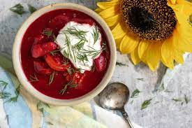

This is the Borscht.
Ingredients:
- beef
- pork
- salo
- beetroots
- cabbage
- carrots
- celeriac
- onions
- potatoes
- mushrooms
- tomato paste
- parsley
- chives
- dill
- bay leaves
- allspices and black pepper
Steps:
- Use a paper-towel to blot off any excess juice.
- Run cold water over the opposite/under side of the fabric to push the stain out.
- If the stain persists, apply a stain removing agent (I have found that dish soap works well in a pinch) and launder clothing as usual.